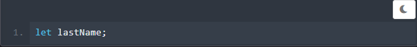
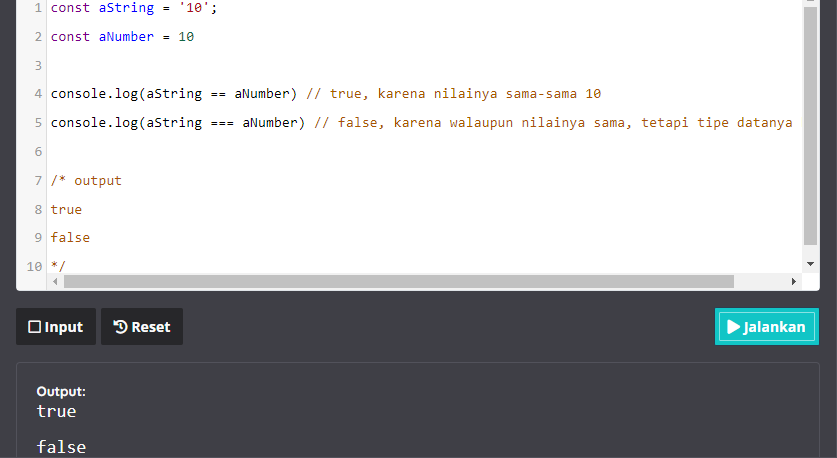
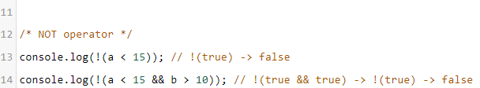
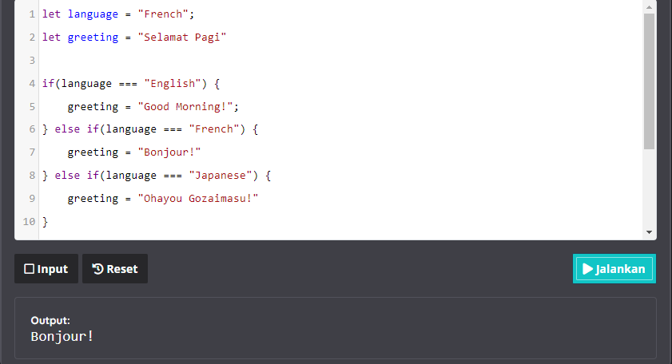

Menulis kode dalam bahasa pemprograman sederhananya adalah
menuliskan instruksi-instruksi untuk dijalankan oleh komputer. Kode
di bawah ini merupakan instruksi bagi terminal atau konsol untuk
mencatat (log) kalimat "Hello, World!".
console.log adalah kode bawaan JavaScript untuk
menampilkan pesan ke konsol, bisa berupa web konsol atau konsol dari
terminal/command prompt.
Kode atau teks yang berada di dalam tanda kurung adalah pesan yang
ingin ditampilkan. Pada contoh kode diatas, kita menggunakan tanda
kutip ("") untuk menandakan bahwa pesan yang ingin ditampilkan
merupakan sebuah
string atau teks. Kita akan membahas mengenai tipe data
pada beberapa modul ke depan. Saat ini kita akan fokus untuk
menampilkan teks terlebih dahulu. Sekarang cobalah untuk menampilkan
nama Anda sendiri ke konsol.
JavaScript membagi instruksi secara umum menjadi dua jenis, yaitu
expression dan statement.
Expression adalah unit kode yang dapat dievaluasi menjadi suatu
nilai. Untuk lebih mudahnya, perhatikan contoh kode berikut.
Sementara itu, statement adalah instruksi untuk melakukan sebuah
aksi tertentu. Aksi ini bisa termasuk membuat variabel, melakukan
perulangan, pengecekan kondisi, dll.
Jika Anda masih bingung untuk membedakan expression dan statement.
tidak perlu khawatir. Saat ini belum banyak kode yang bisa kita
jadikan contoh. Namun, konsep ini akan banyak kita gunakan pada
materi-materi yang akan datang. Yang perlu Anda ingat adalah:
Melalui materi yang kami sampaikan di atas seharusnya Anda sudah
tahu cara menampilkan teks di console. Untuk pemanasan menuju materi
lebih dalam lagi, yuk mulai selesaikan tantangan berikut.
Cobalah cetak teks "Saya mulai belajar JavaScript!" pada console
melalui teks editor yang kami sediakan
Catatac : Pastikan pesan yang ditulis indentik dengan memperhatikan
penggunaan huruf besar dan kecil.
Berikut beberapa catatan dalam menggunakan editor tersebut,
Comments
Pada materi sebelumnya kita telah membahas bahwa kode yang kita
tulis merupakan kumpulan instruksi yang harus dijalankan oleh
komputer. Salah satu instruksi yang penting adalah memberi tahu
komputer untuk mengabaikan perintah yang kita tulis. Instruksi yang
ditulis dalam suatu program tetapi tidak dijalankan oleh komputer
disebut "comments".
Sebuah komentar akan dilewatkan oleh interpreter atau
compiler, sehingga tidak akan memengaruhi alur program yang
kita tulis. Komentar ini bisa digunakan sebagai dokumentasi atau
penjelasan dari kode yang kita tulis.
Terdapat dua metode untuk memberikan komentar. Pertama, untuk
memberikan komentar pada satu baris saja, kita bisa gunakan tanda
dua garis miring (//) di awal baris.
Lalu, untuk memberikan komentar lebih dari satu baris kita bisa
menggunakan tanda /* sebagai pembuka komentar dan
tanda */ untuk penutup komentar. Teks apa pun yang
berada di antara tanda tersebut akan dijadikan komentar dan tidak
akan dieksekusi.
Variable
Ketika menulis sebuah program, kita memberi tahu komputer cara
memproses informasi seperti mencetak teks ke layar atau melakukan
operasi perhitungan. Untuk lebih mudah dalam penggunaan dan
pemanggilan data, kita bisa memanfaatkan variabel. Variabel umumnya
digunakan untuk menyimpan informasi atau nilai yang akan dikelola
dalam sebuah program
Pada JavaScript setidaknya ada tiga cara untuk mendeklarasikan
sebuah variabel, yaitu menggunakan keyworld var,
let, dan const. Pada versi
ECMAScript 2015 (ES6) dikenalkan deklarasi variabel dengan let dan
const untuk menggantikan var yang dinilai kontroversial dan rawan
menimbulkan bug.
Dalam kelas ini, kita akan banyak menggunakan keyword let dan const.
Jika Anda penasaran kenapa var sudah tidak lagi disarankan, silahkan
simak diskusi
berikut
Sekarang bagaimana caranya membuat sebuah variabel dalam JavaScript?
Cukup mudah. Ketikkan keyworld let yang diikuti
dengan nama variabelnya.

Kode untuk mendeklarasikan variabel seperti di atas juga dikenal
dengan declaration statement.
Selanjutnya, Anda bisa mengisi nilai variabel di atas menggunakan
tanda sama dengan (=).
Anda juga bisa langsung menginisialisasi nilai variabel setelah
mendeklarasikannya seperti berikut:
Kode untuk menginisialisasikan nilai ke dalam sebuah variabel dengan
tanda sama dengan (=) ini disebut dengan
assignment expression
Tunggu sebentar. Kita kembali bertemu dengan istilah
statement dan expression. Karena expression pasti
menghasilkan nilai, sehingga mereka bisa muncul di mana pun dalam
program JavaScript. Sementara itu, statement merujuk pada aksi.
Sehingga, pada bagian kode tertentu yang membutuhkan nilai tidak
bisa kita isi dengan sebuah statement. Contohnya seperti kode
berikut.
Melalui contoh kode di atas, kita bisa bayangkan variabel sebagai
kotak atau wadah menyimpan nilai. Proses inisialisasi atau
assignment berarti kita memasukkan nilai ke dalam kotak tersebut.
Variabel lastName di atas akan tersimpan di dalam
memori komputer.
Setiap variabel memiliki nama yang dapat kita panggil dan gunakan.
Kita dapat menamai variabel dengan nama apa pun, tetapi pastikan
penamaannya masih masuk akan dan berhubungan dengan konteksnya
supaya maintenance kode menjadi lebih mudah.
Sebaiknya hindari penamaan variabel dengan istilah umum seperti
"data". Gunakanlah penamaan variabel yang dapat mendeskripsikan
nilai dari variabel itu sendiri. Berikut beberapa aturan dalam
penamaan variabel yang perlu Anda ketahui:
Lalu, bagaimana dengan const? Const merupakan
kependekan dari constant. Artinya, kita akan
mendeklarasikan sebuah variabel dengan const ketika ingin variabel
bernilai konstan dan tidak bisa diubah setelah diinisialisasi
nilainya. Bayangkan variabel bernilai const sebagai sebuah kotak
yang ditutup dan disegel setelh diisim sehingga nilainya tidak bisa
diubah lagi.
Jika menginisialisasi kembali nilai variabel yang menggunakan const,
kita akan mendapati eror "TypeError: Assignment to constant
variable."
Tipe Data
Pada materi sebelumnya kita telah belajar tentang variabel untuk
menyimpan nilai. Nilai yang kita tetapkan pada variabel pasti
memiliki tipe data. Tipe data merupakan pengklasifikasian data
berdasarkan jenisnya. Pada JavaScript terdapat beberapa tipe data
sebagai berikut:
Undefined
Tipe data ini terbentuk ketika sebuah variabel tidak memiliki
nilai. Artinya, ketika kita mendeklarasikan variabel tanpa
menginisialisasikan nilainya, variabel tersebut mejadi
undefined. Contoh
Pada contoh kode di atas, kita mendeklarasikan variabel
x, tetapi kita tidak menginisialisasikan dengan
nilai/value apa pun. Ketika kita memastikan tipe data dengan
menggunakan fungsi typeof(). ia akan menghasilkan
output undefined.
Fungsi typeof() digunakan untuk memastikan tipe data pada variabel
dengan mengembalikan tipe data tersebut dalam bentuk teks.
Numbers
Nilai dari tipe data number adalah angka. Variabel bertipe data
number dituliskan seperti angka pada umumnya:
Jika angka tersebut merupakan sebuah bilangan desimal, maka kita
bisa gunakan tanda titik pada pecahan bilanganya.
Pada tipe data number, kita juga dapat melakukan perhitungan
aritmatika seperti penjumlahan, pengurangan, perkalian, dll.
Berikut operator yang dapat kita gunakan dalam perhitungan
aritmatika pada tipe data number:
Operator
Fungsi
Contoh
+
Penjumlahan
5 + 5 = 10
-
Pengurangan
10 - 5 = 5
*
Perkalian
5 * 10 = 50
/
Pembagian
10 / 5 = 2
%
Sisa hasil bagi
10 % 2 = 0
**
Perpangkatan
5 ** 10 = 500
Pada operator aritmatika juga terdapat operator
increment(++) dan decrement (--). Operator
increment dan decrement digunakan untk
menambahkan atau mengurangi nilai 1 pada nilai variabel yang ada
sekarang
Operator ini dapat dituliskan sebelum atau sesudah variabel,
tetapi hal tersebut bukan berarti sama. Berikut ketentuannya:
Untuk lebih jelasnya, berikut adalah contoh kode penerapan
operator tersebut, perhatikan hasil yang didapat.
BigInt
Pada JavaScript tipe data "Number" hanya mencakup nilai dari
-(253-1) hingga (253-1). Untuk kebutuhan
umum, sebenarnya nilai tersebut sudah sangat cukup. Namun, akan
ada kebutuhan tertentu di mana kita membutuhkan cakupan nilai yang
lebih besar, seperti untuk kriptografi atau menentukan waktu
hingga presisi microsecond.
Untuk nilai dari luar Number, kita bisa menggunakan tipe BigInt.
Untuk membedakan tipe BigInt dan Number, tambahkan karakter
n di akhir angka. Contohnya seperti kode dibawah
ini. Bandingkan dengan yang bertipe Number.
Walaupun digunakan untuk menyimpan angka dengan nilai besar, namun
BigInt tetap bisa digunakan untuk nilai yang lebih kecil.
Kita juga bisa menggunakan BigInt untuk opersi aritmatika pada
umumnya. Yang membedakan adalah operasi pembagian, hasilnya akan
dibulatkan ke bawah tanpa mengandung nilai desimal. Contohnya
adalah seperti ini:
Strings
Tipe data selanjutnya adalah string yang merupakan sebuah
teks untuk menetapkan nilai sebagai string pada variabel gunakan
tanda petik satu (') atau petik dua (") di antara teksnya.
Contohnya:
Tidak ada perbedaan antara menggunakan petik satu atau petik dua.
Anda dapat menggunakan tanda petik secara bergantian, khususnya
jika Anda memiliki teks yang mengandung tanda petik.
Lalu bagaimana jika teks memiliki kedua tanda petik seperti ini?
Tentu kode di atas akan menghasilkan eror. Solusinya, gunakan
backslash(\) untuk mengurangi ambiguitas
dalam tanda petik. Mekanisme ini juga dikenal dengan nama
escape string. Sehingga kode di atas akan menjadi seperti
berikut:
Backslash sebelum tanda petik akan memberitahukan
interpreter bahwa itu hanyalah tanda petik dan tidak
boleh ditafsirkan sebagai pembatas string. Selain tanda petik,
backslash juga berguna untuk mengabaikan simbol lain yang
menimbulkan ambigu di dalam string, contohnya seperti backslash
itu sendiri.
Pada String, kita juga dapat menggunakan operator plus (+).
Operator tersebut berfungsi untuk menggabungkan dua teks yang
terpisah menjadi satu buah teks. Contohnya seperti ini:
Ingat, string concatenation seperti di atas akan
menggabungkan string apa adanya, sehingga jika Anda ingin
menggabungkan dua kata atau lebih perlu menambahkan spasi sendiri.
Selain concatenation, string pada JavaScript juga
mendukung string interpolation. Sederhananya, kita bisa
memasukan variabel ke dalam sebuah string template.
Contohnya adalah seperti berikut:
Perhatikan bahwa untuk mendefinisikan string template.
Anda perlu menggunakan backticks(`),
biasanya terletak di keyboard di bawah tombol Esc. Di
dalam string letaknya variabel yang ingin dimasukkan ke dalam
placeholder${myName}.
Boolean
Boolean hanya memiliki dua nilai, yaitu true dan
false. Tipe data ini menjadi kunci utama dalam
penentuan logika. Kita akan banyak menggunakannya nanti dalam materi
if/else statement. Untuk menetapkan nilai boolean pada
variabel, gunakan keyword true atau
false seperti di bawah ini.
Kita juga bisa menggunakan operator komparasi seperti lebih dari (>)
atau kurang dari (<). Contohnya:
Null
Tipe berikutnya adalah null. Serupa dengan underfined,
namun null perlu diinisialisasikan pada variabel. Null biasa
digunakan sebagai nilai sementara pada variabel. Null biasa
digunakan sebagai nilai sementara pada variabel, tapi sebenarnya
nilai tersebut "tidak ada".
Terkadang kita perlu membuat sebuah variabel, namun kita belum
memerlukan nilai apa-apa dan tidak ingin teriakt oleh tipe data apa
pun. Nah, daripada kita tidak menetapkan nilai apa pun (variabel
akan underfined) sebaiknya kita beri nilai null pada variabel
tersebut dan ubah nanti ketika kita membutuhkannya.
Untuk menetapkan null pada variabel, kita dapat gunakan keyword null
ketika variabel tersebut diinisialisasi.
Symbol
Symbol adalah tipe data baru yang dikenalkan pada ES6. Tipe data
Symbol digunakan untuk menunjukkan identifier yang unik. Ketika
membuat Symbol, kita bisa memberikan deskripsi atau nama Symbol
seperti ini:
Symbol disebut sebagai identifier yang unik karena meskipun
kita membuat dua varuabel symbol dengan nama atau deskripsi yang
sama, kedua nilainya tetap dianggap berbeda. Contohnya lihat kode
berikut:
Symbol ini umumnya digunakan sebagai name property dari Object.
Object sendiri merupakan tipe data kompleks untuk menyimpan berbagai
struktur data. Kita akan segera bertemu dan mempelajari tentang
object pada modul Data Structure.
Operator
Pada materi ini kita akan mempelajari tentang operator yang terdapat
pada JavaScript. Operator dalam bahasa pemprograman sendiri adalah
simbol yang memberi tahu interpreter untuk melakukan operasi seperti
matematika, relasional, atau logika untuk memberikan hasil tertentu.
Assignment Operator
Dari contoh kode yang kita gunakan sebelumnya, sebenarnya kita
sudah menggunakan assignment operator. Operator ini digunakan
untuk memberikan nilai pada variabel
Pada dasarnya operator ini adalah tanda sama dengan (=), di mana
tanda ini digunakan untuk menginisialisasi nilai pada variabel.
Tempatkan variabel yang ingin diberi nilai di sebelah kiri,
sementara nilainya di sebelah kapan. Di antara keduanya terdapat
operator assignment.
Expression di atas berarti kita menginisialisasi nilai
y pada variabel x, sehingga
nilai x sekarang memiliki nilai yang sama dengan y.
Ada beberapa assignment operator tambahan lain dalam
menginisialisasikan nilai pada variabel. Kita bisa menyebutnya
sebagai shortcut dalam menentukan nilai. Contohnya:
Pada contoh kode di atas, terdapat expressionx += y; Apa artinya? Assignment operator tersebut
digunakan sebagai shortcut dari x = x + y. Cara
ini dapat digunakan pada operator artimatika lain seperti,
perkalian, pengurangan, pembagian, dan lainnya.
Comparison Operator
Sekarang kita sudah mengetahui bagaimana cara menyimpan nilai pada
sebuah variabel. Nah, selanjutnya kita akan belajar mengenai
operator komparasi sebagai logika dasar dalam membandingkan nilai
pada JavaScript
terdapat serangkaian karakter khusus yang disebut dengan operator
pembanding/komparasi yang dapat mengevaluasi dan membandingkan dua
nilai. Berikut daftar operator dan fungsinya:
Operator
Fungsi
==
Membandingkan kedua nilai, tetapi mengabaikan tipe data.
!=
Membandingkan kedua nilai haruslah tidak sama, tetapi
mengabaikan tipe data.
===
Membandingkan kedua nilai beserta tipe data.
!==
Membandingkan kdua nilai beserta tipe data haruslah tidak
sama.
>
Membandingkan dua nilai apakah nilai pertama lebih dari nilai
kedua.
>=
Membandingkan dua nilai apakah nilai pertama lebih atau sama
dengan nilai kedua.
<
Membandingkan dua nilai apakah nilai pertama kurang dari nilai
kedua.
<=
Membandingkan dua nilai apakah nilai pertama kurang atau sama
dengan nilai kedua.
Ketika kita melakukan perbandingan antara dua nilai, JavaScript
akan mengevaluasi kedua nilai tersebut dan mengembalikan boolean
dengan nilai hasil perbandingan tersebut, baik false atau true.
Berikut contohnya:
Perbedaan antara "Sama" dan "Identik"
Dalam operator komparasi di JavaScript, hal yang menjadi sedikit
"tricky" adalah membedakan antara "sama" (==) dan "identik" (===).
Kita sudah mengetahui bahwa setiap nilai pasti memiliki tipe data
baik itu number, string, atau boolean. Contohnya sebuah string
"10" dan number 10 merupakan hal yang serupa, tetapi keduannya
tidak benar-benar sama.
Hal inilah yang membedakan antara sama dan identik pada
JavaScript. Jika kita ingin menbandingkan hanya dari kesamaan
nilainya kita bisa gunakan == tapi jika kita
ingin membandingkan dengan memperhatikan tipe datanya kita gunakan
===
Contohnya seperti berikut:

Logical Operator
Terdapat beberapa operator lain yang dapat kita gunakan untuk
menetapkan logika yang lebih kompleks, yakni dengan
logical operators. Dengan logical operator, kita dapat
menggunakan kombinasi dari dua nilai boolean atau bahkan lebih
dalam menetapkan logika.
Pada JavaScript terdapat tiga buah karakter khusus yang berfungsi
sebagai logical operator. Berikut macam-macam logical operator dan
fungsinya:
Operator
Deskripsi
&&
Operator dan (and). Logika akan menghasilkan nilai true
apabila semua kondisi terpenuhi (bernilai true).
||
Operator atau (or). Logika akan menghasilkan nilai true
apabila salah satu kondisi terpenuhi (bernilai true).
!
Operator tidak (not). Digunakan untuk membalikkan sesuatu
kondisi.
Berikut contoh penerapannya pada JavaScript

Mungkin sebagian dari kita bertanya, sebenarnya apa kegunaan dari
nilai boolean selain hanya menampilkan nilai true dan false aja?
Pada pembahasan tipe data sudah pernah disebutkan bahwa boolean
merupakan salah satu kunci dari logika pemprograman, karena boolean
dapat mengontrol bagaimana alur program kita akan berjalan.
Lantas bagaimana cara boolean mengontrol sebuah aliran program? Pada
materi selanjutnya, kita akan membahas mengenai if/else statement
yang dapat mengontrol flow pada program, tentunya pada
penggunaan statement boolean ini sangat berguna.
If/Else Statement
Setiap hari kita melakukan perhitungsn dan perbandingan guna membuat
keputusan, apa pun itu. Contohnya, apakah perlu mencuci kendaraan
ketika cuaca sedang cerah? Apa saja transportasi
online yang bisa dipesan ketika hujan untuk sampai di
tempat tujuan?
Ketika mengembangkan sebuah program, kita akan bertemu dengan alur
bercabang tergantung pada kondisi yang terjadi. Untuk mengakomodasi
dan mengecek sebuah kondisi dalam JavaScript, kita menggunakan kata
kunci if.
Statement if akan menguji suatu kondisi. Jika kondisi bernilai
trus, maka blok kode di dalamnya akan dijalankan.
Sebaliknya, jika bernilai false, maka proses yang
ditentukan akan dilewatkan.
Flowchart di atas jika diterjemahkan menjadi kode, akan
menjadi seperti berikut.
Jika Anda mengubah nilai isRaining menjadi
false, maka kode di dalam blok kode
if akan dilewatkan. Sehingga program anda tidak
akan mengingatkan untuk membawa payung.
Lalu bagaimana jika Anda ingin melakukan operasi lain ketika kondisi
bernilai false? Jawabannya adalah
statementelse. Pada contoh kode berikut
kita akan melakukan pengecekan kondisi menggunakan operator
perbadingan
Terdapat variabel x dengan nilai 50, kemudian kita
bertanya, "Hai JavaScript! Apakah x lebih dari 70?" Jika kondisi
tersebut benar, maka kita dapat memerintahkan JavaScript untuk
menampilkan nilainya. Jika salah, kita perintahkan JavaScript untuk
menampilkan teks "Nilai kurang dari 70".
Kita juga bisa mengecek beberaoa kondisi sekaligus dengan
menggabungkan else dan if.
Contohnya adalah seperti program berikut:

Pengecekan kondisi akan dilakukan dari statement if paling awal.
Sehingga, ketika nilai language adalah "French",
maka pengecekan untuk language === "Japanese" tidak
akan dilakukan.
Selain if statement di atas, JavaScript juga mendukung
ternary operator atau conditional expressions.
Dengan ini, kita bisa menuliskan if-else statement hanya
dalam satu baris.
Ternary operator membutuhkan tiga operand. Sebelum tanda
tanya (?) berisi kondisi yang ingin kita evaluasi. Kemudian diikuti
dengan expression apabila nilai kondisinya benar sebelum
tanda titik dua. Terakhir adalah expression yang dieksekusi
ketika kondisinya salah. Karena merupakan
conditional expression, maka operand kedua akan ketiga
harus mengembalikan nilai.
Truthy & Falsy
Di dalam if statement kita perlu memasukkan expression yang akan
dievaluasi. Umumnya, expression tersebut mengembalikan nilai
boolean untuk menentukan kondisi true atau false. Lalu bagaimana
jika kita menuliskan expression yang tidak mengembalikan nilai
boolean? Jawabannya bisa.
Setiap nilai pada JavaScript pada dasarnya juga mewarisi sifat
boolean. Nilai ini dikenal dengan truthy atau
falsy. Nilai truthy berarti nilai yang ketika dievaluasi
akan menghasilkan nilai true, begitu pula falsy bernilai false.
Jadi manakah yang termasuk truthy dan falsy? Selain nilai boolean
false, tipe data atau nilai yang dianggap falsy, antara lain:
Selain contoh di atas maka nilainya adalah truthy dan ketika
dievaluasi ke dalam if statement akan bernilai true. Berikut ini
contohnya dalam kode:
Switch Case Statement
Sebelumnya kita telah mempelajari bagaimana percabangan logika
menggunakan if statement. Selain if, JavaScript juga
mendukung switch statement untuk melakukan pengecekan
banyak kondisi dengan lebih mudah dan ringkas.
Tanda kurung setelah keyworldswitch berisi variabel atau expression yang akan
dievaluasi. Kemudian untuk setiap kondisi yang mungkin terjadi, kita
masukkan keyworldcase diikuti dengan
nilai yang valid. Jika kondisi pada case sama dengan variabel pada
switch, maka blok kode setelah titik dua (:) akan dijalankan.
Keyworld break digunakan untuk keluar dari proses
switch. Terdapat satu case bernama default yang
memiliki fungsi yang sama dengan keyword else pada
control flow if-else. Jika tidak ada nilai yang sama dengan
variabel pada switch, maka blok kode ini akan dijalankan.
Berikut ini adalah contoh kode dari materi if-else yang dikonversi
menjadi statement switch:
Loop
Ketika menulis program komputer, akan ada situasi di mana kita perlu
melakukan hal yang sama berkali-kali. Misalnya kita ingin
menampilkan semua nama pengguna yang terdaftar di aplikasi atau
sesederhana menampilkan angka 1 sampai 10. Tentunya tidak praktis
jika kita menulis kode seperti berikut:
Bagimana jika kita perlu menampilkan angka 1 sampai 100? Sudah
terbayang repotnya, bukan? Maka dari itu kita perlu mempelajari
teknik yang dapat mengatasi permasalahan tersebut, teknik ini
disebut dengan looping. JavaScript memiliki banyak opsi
untuk melakukan looping atau perulangan kode, antara lain:
For loop
Dari beberapa cara melakukan proses loop pada JavaScript, "for"
merupakan salah satu cara yang banyak digunakan. Struktur dasar
dari for tampak seperti berikut:
Berikut ini contoh penerapannya secara nyata:
Lebih ringkas, bukan? Mungkin kode tersebut sulit dipahami, jadi
mari kita bahas sedikit demi sedikit. Terdapat tiga bagian utama
dalam sintaks fot di atas:
Jika diartikan, maka kode di atas bisa dimaknai dengan "Jika i
kurang dari 5, maka tampilkan nilai i."
For of loop
Cara lain dalam melakukan looping adalah menggunakan
for..of. For of mulai hadir pada ECMAScript 2015
(ES6). Cara ini jauh lebih sederhana dan modern dibanding for loop
biasa. Sintaks dasar dari for of loop adalah seperti ini:
Yup, for of tidak membutuhkan banyak
statement untuk melakukan looping pada
array. Penjelasan tentang array akan lebih detail dibahas
pada modul berikutnya. Sebagai permulaan, kita bisa menganggap
array sebagai kumpulan nilai yang disimpan dalam satu variabel.
Dengan for..of nilai tiap array akan
diinisialisasi pada variabel baru yang kita tentukan pada tiap
proses looping-nya. Jumlah proses looping-nya
pun akan menyesuaikan dengan ukuran dari array. Sederhananya
seperti kita melakukan perintah "Hei JavaScript! Lakukan
perulangan pada myArray, akses tiap nilainya, dan simpan pada
variabel arrayItem". Pada proses looping kita gunakan variabel
arrayItem untuk mengakses tiap nilai dari item myArray.
Agak sulit memang menjelaskan dengan kata-kata, mari kira
terjemahkan dalam kode secara langsung.
While dan do-while
Metode lain untuk melakukan looping adalah dengan statement
while. Sama seperti for, instruksi while mengevaluasi
ekspresi boolean dan menjalankan kode di dalam blok while ketika
bernilai true.
Untuk menampilkan angka 1 sampai 100 dengan while kita bisa
menulis kode seperti berikut:
Bisa dilihat pada kode di atas bahwa looping dengan while tidak
memiliki ketergantungan dengan variabel iterasi seperti pada for
loop. Karena itu, meskipun while dapat melakukan perulangan yang
sama dengan for, while lebih cocok digunakan pada kasus di mana
kita tidak tahu pasti berapa banyak perulangan yang diperlukan.
Bentuk lain dari while adalah perulangan do-while.
Kondisi pada while akan dievaluasi sebelum blok kode di dalamnya
dijalankan, sedangkan do-while akan mengevaluasi boolean
expression setelah blok kodenya berjalan. Ini artinya kode di
dalam do-while akan dijalankan setidaknya satu kali.
Indinite loops
Ketika menerapkan perulangan pada program, ada satu kondisi yang
perlu kita hindari yaitu infinite loop. Infinite loop
atau endlss loop adalah kondisi di mana program kita
stucked di dalam perulangan. Ia akan berjalan terus
hingga menyebabkan crash pada aplikasi dan komputer
kecuali ada intervensi secara ekxternal, sepeti mematikan
aplikasi.
Kode berikut ini adalah contoh di mana kondisi infinite loop dapat
terjadi:
Dapatlah Anda menumukan apa yang salah dari kode di atas sehingga
terjadi infinite loop?
Jawabannya adalah karena variabel i selalu
bernilai 1. Alhasil, kondisi i <= 5 akan selalu
bernilai true yang mengakibatkan aplikasi akan
terus mencetak 1 ke konsol sehingga mengalami crash.